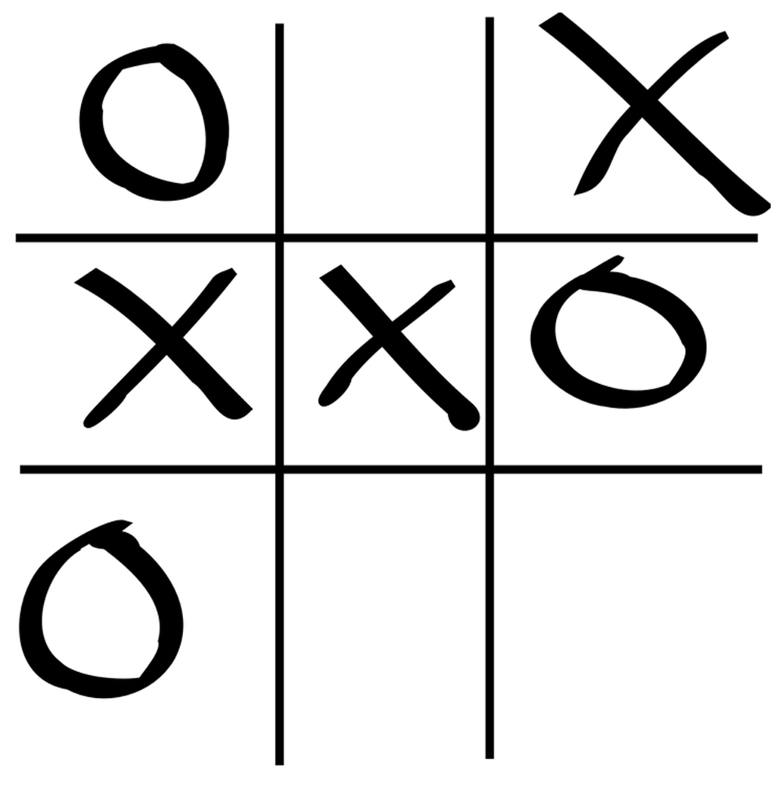
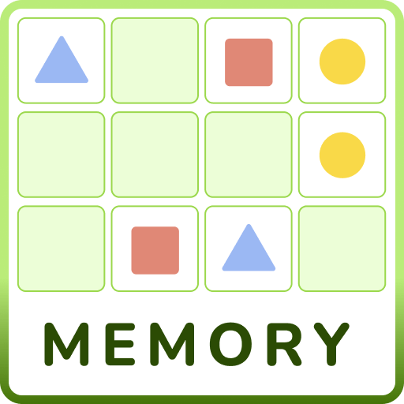

Amőba
Az amőba kétszemélyes absztrakt stratégiai táblás játék, a gomoku játékcsalád egy széles körben ismert tagja, amit már az ókori Egyiptom területén is ismertek. A két játékos hagyományosan X és O alakú jelekkel (bábukkal) játszik. A 3×3 mezőből álló táblára felváltva teszik le a jeleiket, bármelyik még szabad mezőre. Az nyer, akinek sikerül egy vonalban 3 jelet elhelyeznie, vízszintes, függőleges vagy átlós irányban.

Memória játék
Memória játék

Snake
Snake